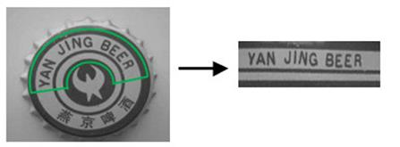

|
类型 |
几何变换 |
|
描述 |
从图像中截取出圆环roi指定的区域图像，roi不要超出img范围 别名：ZV_WarpRing |
|
语法 |
ZV_ImpCropRing(src,subImg,cx,cy,radius,annR,startA,extentA,interp)
参数： img：ZVOBJECT类型，源图像为单通道或三通道图像 subImg：ZVOBJECT类型，截取出的图像 cx：圆环中心x坐标 cy：圆环中心y坐标 radius：圆环中线的半径，大于0 annR：圆环宽度，(0,radius] startA：圆环起始角度，图像坐标系，顺时针为正，单位为度 extentA：圆环角度范围，范围(0,360]，若大于360则取360，单位度数 interp：插值算法，参考旋转 |
|
适用控制器 |
支持ZV功能或者5系列以上的控制器 |
|
例子 |
 ZVOBJECT src,dst ZV_ImgRead(src,"0.bmp",0) '以原图像格式读取图片 ZV_ImpCropRing(src,dst,320,240,60,20,0,170,1) '从src中截取图像 |